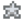

Geheimnisse
Diese Seite widmet sich vielen Geheimnissen, welche in Stardew Valley gelüftet wurden.
Wiederkehrende Easter Eggs
Es gibt einige Easter Eggs, die in Stardew Valley wiederkehren oder miteinander verknüpft sind.
Hüte
Hüte können aufgesetzt werden...
- Kinder (Kleinkindalter) und Pferde. Sie können wieder entfernt werden, indem ein weiterer Hut gehalten wird und auf diese wieder geklickt wird; der alte Hut wird hierbei entfernt, ohne den neuen Hut sofort zu platzieren.
- Sammler-Vogelscheuche 3 (Alien). Hüte können gewechselt werden, zum vollständigen Entfernen des Hutes muss die Vogelscheuche mit einem Werkzeug entfernt werden.
- Seeigel in Aquarien beim Halten eines Hutes und Klicken des Aquariums. Durch das Öffnen des Aquariuminventars und Entfernen des Hutes können sie wieder entfernt werden.
Violette Glücksshorts
Bürgermeister Lewis' Violette Glücksshorts haben mehrere Geheimnisse.
- Gibt man Lewis seine violette Glücksshorts während er die Ingwerinsel besucht, wird er sie 28 Tage lang als Strandkleidung tragen.
- Fügt man sie dem Pott im Luau zu, erhält man eine besondere Reaktion vom Gouverneur und Lewis.
- Platziert man sie im Ausstellstand des Sterntautaler Volksfestes, wird der Spieler disqualifiziert und Lewis gibt dem Spieler 750 als Bestechung, um sein Geheimnis zu wahren. Marnie hat einen besonderen Dialog beim Fest, nachdem sie die Shorts im Display gesehen hat.
- Wird sie in der Schneiderei zusammen mit einem Goldbarren verwendet, erhält man die "Beschnittene lila Glücksshorts". Diese gelten für Aufträge oder andere Geheimnisse als Violette Glücksshorts, können aber auch vom Spieler für eine amüsante Reaktion von Marnie und Lewis getragen werden.
- Beschnittene lila Glücksshorts können auch erhalten werden, indem man eine Treppe in den Hosenplatz des Spieles legt.
Taubenkinder
Kinder in Tauben zu verwandeln schaltet mehrere Easter Eggs frei.
- Man kann einen mysteriösen Telefonanruf erhalten: "Du legst den Hörer an dein Ohr und wirst mit einer beunruhigenden, abrasiven Statik konfrontiert. ~ Moment... leise hörst du in der Statik etwas anderes... eine jenseitige Stimme... 'D-U H-A-S-T U-N-S- I-M- S-T-i-C-H G-E-L-A-S-S-E-N'". Dies geschieht nicht mehr, nachdem die verfluchte Puppe getroffen hat.
- Schaut man am 26. Herbst auf dem Standard-Hof fern und wählt "???", wird eine Alte Puppe auf dem Bildschirm angezeigt und eine unheimliche Nachricht erscheint ("Du hast dir das selbst angetan... jetzt bin ich frei..... Hee hee hee!") und eine Alte Puppe purzelt aus dem Fernseher heraus. Daraufhin fliegt beim dunklen Schrein des Egoismus eine Alte Puppe herum und attackiert den Spieler. Wenn sie getötet wird, verwandelt sie sich in einen großen schwarzen Vogel und fliegt davon. Die Puppe erscheint erneut, wenn die Hexenhütte verlassen und erneut betreten wird. (Das Töten dieser Puppe zählt zum Monsterjagdziel für 200 Fledermäuse töten dazu.)
- Auf dem Ecken-Hof kann der Spieler beim Fischen einmalig eine Alte Puppe fangen.
- Wenn mehrere Kinder in Tauben verwandelt wurden, besteht eine Wahrscheinlichkeit von 15%, dass diese auf dem Gipfel in Formation vorbeifliegen.
Intro
Logo
Klickt man während des Ladebildschirms auf das ConcernedApe Logo, verschwindet die Sonnenbrille (falls vorhanden) und die Augen des Maskottchens öffnen sich. Außerdem wird das Geräusch einer Ente/eines platschen abgespielt.
Eine seltene grüne version des ConcernedApe Logo kann erscheinen, wenn man das Logo während dem laden anklickt.
Tipp-Nachrichten
Das Spiel verfolgt, wie oft es gestartet wurde und zeigt auf der Anzahl basierend freundliche Nachrichten in der unteren linken Ecke beim ConcernedApe Ladebildschirm an.
| Nachrichten | |
|---|---|
| Startanzahl | Nachricht |
| 2 | Willkommen zurück! |
| 3 | Stecke einen Xbox One oder Xbox 360-Controller ein, um den Gamepad-Modus zu aktivieren. |
| 4 | Tipp: Du findest leicht Freunde im Sternentautal, wenn du anderen Geschenke machst. |
| 5 | Tipp: Halte die Umschalttaste und klicke, um 5 Gegenstände auf einmal zu kaufen. |
| 6 | Nachdem du deine Hacke oder Gießkanne verbessert hast, halte die Werkzeugtaste gedrückt, um die Wirkungsfläche zu vergrößern. |
| 7 | Tipp: Rechtsklick löst den Spezialangriff deiner Waffe aus. |
| 8 | Sieh etwas fern, um nützliche Tipps, Kochrezepte und mehr zu erfahren! |
| 9 | Die reisende Händlerin besucht das Sternentautal einmal in der Woche. Sie verkauft eine große Auswahl verschiedener Waren, oft zu exorbitanten Preisen! |
| 10 | Danke fürs Spielen! |
| 15 | Elliotts letzter Satz: (zufällig konstruierter Satz) |
| 20 | ♡ |
| 30 | Herausforderung: Beende "Reise des Prärie-Königs" ohne zu sterben. |
| 100 | Du hast das Spiel 100 Mal gestartet. |
| 1.000 | Du hast das Spiel 1.000 Mal gestartet! |
| 10.000 | Du hast das Spiel 10.000 Mal gestartet! Ich bin beeindruckt. -Ape |
Titelbildschirm

- Klickt man auf dem Titelbildschirm zehnmal auf das "E" bei "Stardew", erscheint hinter dem "E" ein Alien, welches lächelt und für zwei Sekunden Friedenszeichen zeigt, bevor es wieder verschwindet.
- Klickt man insgesamt 10 Mal auf irgendein Blatt, erscheinen 3 Junimos im Logo, welche ebenfalls winken.
- Klickt man 10 Mal auf den Buchstaben "W", erscheinen Schmetterlinge.
- Klickt man insgesamt 6 Mal auf die untere Ecke des Stardew Valley Logos, erscheint ein kleines Stück Holz, das in das "R" von "Stardew" eingesetzt werden kann und bewirkt, dass um das Logo Blätter erscheinen und Vögel weg fliegen.
- Wenn ein Controller verwendet wird und
 auf Xbox oder
auf Xbox oder  auf PS4 gedrückt wird, werden sich die Wolken schnell bewegen. Funktioniert nur dort, wo die beiden Vögel fliegen und stoppt, wenn das Menü herunterkommt.
auf PS4 gedrückt wird, werden sich die Wolken schnell bewegen. Funktioniert nur dort, wo die beiden Vögel fliegen und stoppt, wenn das Menü herunterkommt.
Charaktererstellung
Sonderzeichen
Werden in der Charaktererstellung in den Feldern "Name", "Hof-Name" oder "Mag gerne" gewisse Tasten gedrückt, erscheinen bei manchen besondere Töne und/oder Symbole.
- Die folgenden Tasten lassen die folgenden Töne erklingen.
- Drückt man
<ertönt ein "Ding" Sound - Drückt man
$ertönt ein "Pling" Sound - Drückt man
*ertönt ein "Steinschlag" Sound - Drückt man
=ertönt ein "Pop" Sound - Drückt man
+ertönt ein "Matsch" Sound
- Drückt man
- Durch Drücken der folgenden Tasten werden Sonderzeichen erzeugt.
- Drückt man
<erscheint♡, ein Herz - Drückt man
>erscheint▷, ein rechter Dreieckspfeil - Drückt man
@erscheint◁, ein linker Dreieckspfeil - Drückt man
$erscheint⌾, ein Doppelkreis - Drückt man
*erscheintüí¢, das "Wut"-Symbol, in japanischen Medien verbreitet - Dr√ºckt man
=erscheint‚òÜ, ein Stern
- Drückt man

- Durch Drücken von Controller-Tasten werden auch spezielle Töne oder Sonderzeichen erscheinen.
Item Spawn Cheat
Nur PC/Mobil: Wird als Name des Charakters eine interne [Englisch] ID-Nummer in Klammern verwendet, erhältst du immer den Gegenstand, der der ID-Nummer entspricht, wenn ein NPC deinen Namen erwähnt. Wenn beispielsweise [645][499][163] als Name verwendet wird, erhält man je ein Iridium-Sprinkler, Uralte Samen und Legende. (Dieser Exploit funktioniert auch bei der Benennung von Kindern und Tieren.)
Nur Mobil: Benennt man einen Charakter mit einer ungültigen [Englisch] ID-Nummer (in etwa [26]), wird ein Objektfehler generiert.
"Lieblingsding"
Es wird ein spezieller Text dargestellt, wenn man beim Erstellen des Charakters ConcernedApe ins Feld des Lieblingsdings eingibt, sobald man eine Sternenfall-Frucht isst.
Wenn man etwas, was "Stardew" beinhaltet, als Lieblingsding eingibt, wird der zusätzliche Text "Du fühlst eine unerschütterliche Verbindung mit dem Tal selbst." erscheinen, wenn man eine Sternenfall-Frucht isst. Beachte, dass das "S" in "Stardew" großgeschrieben werden muss.

Spielwelt Menüs
Versandbildschirm
Ein paar seltene Animationen können im Hintergrund des Versandbildschirms am Ende des Tages gesehen werden, abhängig von bestimmten Bedingungen.
- Zahlen über 999.999 laufen auf den leeren Bereich über und bewegen sich in einem Wellenmuster auf und ab.
- Am 24. Winter kann der Weihnachtsmann mit ein paar Rentieren gesehen werden, wie er den oberen Teil des Bildschirms überquert

- Wenn es nicht der 28. ist und es nicht regnet, gibt es eine Wahrscheinlichkeit von 0,001%, dass ein UFO den oberen Teil des Bildschirms überquert.

- In Nächten mit Vollmond führt ein mehrmaliges Klicken dazu, dass sich der Mann im Mond offenbart.

Einsamer Stein
Der Einsame Stein ist kein Areal, sondern eine Stelle auf der Stardew Valley-Karte. Wenn man den Einsamen Stein auf der Karte anklickt, wird ein Fels-Soundeffekt abgespielt. Nach dem Klicken auf den Einsamen Stein und ungefähr zur selben Zeit, zu der der Fels-Soundeffekt abgespielt wird, schließt sich das Kartenmenü.
Der Einsame Stein wird außerdem von keinem Dorfbewohner/Charakter erwähnt, es ist kein Bericht über ihn in Spieldateien versteckt und er wurde noch nie von ConcernedApe erwähnt.
Geschenkprotokoll
Klickt man im Geschenkprotokoll (im Reiter "Soziales") auf ein Bild eines Dorfbewohners, wird eine spezielle Animation für den Charakter angezeigt.
Geheime Gegenstände
Verschlossene Kisten
Die ersten Buchstaben in den unleserlichen Verlorenen Büchern im Museum bilden folgende Worte:
- SUPER SEEGURKE STADT
- ENTEN MAYONNAISE SALOON
- KOMISCHES BROETCHEN SPIELZEUGKISTE
Mit diesen Informationen können drei geheime Statuen gefunden werden:
| Geheimer Gegenstand | Anforderung |
|---|---|
| Platziere eine Super-Seegurke in die braune Box im abgezäunten Bereich nördlich vom Schmied. | |
| Platziere eine Enten-Mayonnaise in die teilweise versteckte Metallbox hinter dem Fass im Hinterzimmer der Kneipe zum Sternenfall. | |
| Platziere ein Komisches Brötchen in die Kiste in Vincents Zimmer in der Weidengasse 1. |
Die Kiste hinter dem Joja-Markt (im Nordosten) hat keine Funktion.
Galaxie-Schwert
Nach Auffinden und Spende aller vier Zwergenschriftrollen, erhält der Spieler den Zwergischen Übersetzungsleitfaden. Wenn der Spieler dann zu dem vorher unleserlichen Grabstein geht, kann er die Inschrift nun lesen.
| “ | “Du √ºbersetzt das Zwergisch Steh zwischen den S√§ulen drei Mit Geschenken, wertvoll wie der Himmel selbst: Ein Regenbogen, geschmiedet nicht auf Land, aber der See Dann Galaxien werden auf dich h√∂ren” |
Dies weist auf die Calico-Wüste und die sich dort befindenden Drei Säulen im Nordosten hin. Wenn man sich in die Mitte der Säulen stellt, während man eine Prismatische Scherbe in den Händen hält, wird die Scherbe in das Galaxie-Schwert verwandelt.
Plüsch-Junimo
Der Plüsch-Junimo ist eines von mehreren geheimen Möbelstücken. Man kann ihn finden, indem man den Busch im Nordwesten von Pelikan Stadt hinter dem Spielplatz an einem 28. Tag einer beliebigen Jahreszeit um exakt 12:00 Uhr schüttelt.

Eichhörnchenfigur
Fischen am westlichsten des Flusses auf der Ingwerinsel, zugänglich über den Vulkan, führt zu einem Geschenk, welches eine Eichhörnchenfigur enthält.
Iridium-Krobus
Der Spieler kann den Iridium-Krobus erhalten, indem an der südlichsten Spitze des Zundersaftwaldes nahe dem Eingang der Kanalisation mit Stufe 15 gefischt wird.
Rettungsring
Kann beim Fischen im Hinterzimmer von Willys Anglerbedarf erhalten werden.
Merkwürdige Kapsel
Nachdem eine Merkwürdige Kapsel erscheint und aufgebrochen wird, gibt es eine Wahrscheinlich von 1% eine dunkle Kreatur beim Winken an der Bushaltestelle oder beim Rennen hinter Bäumen und Büschen in Pelikan Stadt (Nahe des Baums nördlich von Weidengasse 1 und in den Büschen neben der Brücke, die zum Strand führt) zu erblicken.

Die dunkle Kreatur

Die dunkle Kreatur

Die dunkle Kreatur
Welt
Tafeln in der Schädelhöhle
Die Tafeln können ab und zu an den Wänden der Schädelhöhle gefunden werden und enthalten durch Chiffren verschlüsselte Texte.[1]
Die an den rau-wändigen Ebenen gefundene Tafel wurde so weit entziffert:
| “ | “wir sind verflucht zu viel Iridium” |
Dies könnte ein Verweis auf die Violetten Schleime sein, die Iridiumerz fallen lassen und in den Ebenen in großer Zahl zu finden sind.
Die Tafel der Ebene mit Mumien wurde wie folgt entziffert:
| “ | “Zauberer hat uns versiegelt in diesem Gef√§ngnis bis zu dem an dem uns ein Held erl√∂st” |
Dies könnte womöglich auf den Zauberer verweisen, welcher im Zundersaftwald lebt.
Vulkantafel
Die Tafel über der Vulkanschmiede wurde soweit entziffert:
| “ | “ait otusnats tomu htam doo smol din mopu o uy hamu duuonh snau” |
Welches Zwergisch ist und bedeutet:
| “ | “Unsere Vorfahren kamen vom Himmel, bauten aber unter Stein ein neues Zuhause” |
Altmeister Cannoli
Eine Sternenfall-Frucht kann von Altmeister Cannoli in den Geheimen Wäldern erhalten werden, wenn man ihm eine Süße Edelsteinbeere übergibt.
Seltene Dialoge
Wenn man Marnies Geschäft betritt, gibt es eine 0,01%ige Chance, dass sie sagt
| “ | “**seufz*... Als die T√ºr aufging, dachte ich, es w√§re vielleicht Lewis.” |
Wenn man Robins Schreinerei oder Marnies Geschäft betritt, gibt es eine Chance, dass sie sagen
| “ | “Lew...? Oh...” |
Strandkreatur
Sehr selten kann eine grüne Kreatur am südwestlichsten Ufer des Strands erscheinen und nach Süden in den Ozean schwimmen. Die Kreatur erfüllt nur einen rein dekorativen Zweck und kann weder geangelt, noch mit ihr interagiert werden.
Es besteht eine Wahrscheinlichkeit von ungefähr 0,06% pro Sekunde (0,001% pro Spiel-Tick), dass die Kreatur versucht, in einem zufälligen Feld in der Nähe der Docks zu erscheinen (siehe Erscheinungsort unten). Die Kreatur wird nur erscheinen, wenn es sich bei dem zufälligen Feld um offenes Wasser handelt und sich zwischen dem Feld und dem unteren Rand der Karte eine gerade vertikale Linie von ausschließlich Wasser befindet. Dieses verringert die Wahrscheinlichkeit erheblich. Die Anzahl der Kreaturen ist nicht limitiert, aber dass mehrere gleichzeitig erscheinen wäre außerordentlich selten und wurde bisher noch nie gemeldet.
Dieselbe Kreatur kann auch in Krobus' 14-Herz Event gesehen werden, in dem es das Schattenwesen auf seinen Tentakeln trägt. (Das Event ist kein zufälliges Ereignis).

Die Kreatur im Spiel.

Erscheinungsort der Kreatur.
Schleime
- Schleime können durch die Schleim-Eierpresse an allen möglichen Orten schlüpfen, darunter Pelikan Stadt und die Eisenbahn. Schleime sind dafür bekannt, mit den Dorfbewohnern zu interagieren, sie mit Namen zu grüßen dass sie zurück gegrüßt werden. Beachte, dass dies nicht überall funktioniert und dass die Schleime an manchen Orten über Nacht entfernt werden..
- Schleime können ebenfalls im Bauernhaus schlüpfen. Ist man verheiratet, reagiert der Ehepartner unter Umständen mit diversen lustigen Dialogen, während er versucht, den Schleim zu töten.
Zufällige Ereignisse
Siehe Zufällige Ereignisse.
Schrein der Illusionen
Nutzung des Schrein der Illusionen, um einen Item Spawn Code zum Charakternamen hinzuzufügen, zeigt einer der folgenden zufälligen Chatnachrichten:
- ConcernedApe: Was ist das für ein Name? Scheint verdächtig...
- Herr Qi: Leicht {{Itemname}}, was? Ich bin enttäuscht. Ich dachte, du wolltest dieses Spiel fair und ehrlich gewinnen?
- *Großvater schüttelt den Kopf.* 'Ich habe diese Farm auf altmodische Weise gebaut, nicht mit unbegrenzten {{Itemname}}...'
- ConcernedApe ist wütend, dass du betrügst...
ConcernedApe: Ich bin eigentlich nicht böse... viel Spaß. - Ich rufe alle Wagen! Ich rufe alle Wagen! Ein {{Itemname}} Dieb läuft frei herum!
Gipfel
Wird in Mr. Qis Wallnusszimmer Perfektion erreicht, erhält der Spieler Zugang zum Gipfel. Wird dieser besucht, besteht die Möglichkeit, dass in der Ferne etwas vorbeifliegt:
- 25% Wahrscheinlichkeit eines saisonalen Vogels;
- danach: wenn mehrere Kinder in Tauben verwandelt wurden, besteht eine 15% Wahrscheinlichkeit, dass sie in Formation vorbeifliegen;
- danach: wenn Harveys 8-Herzen Event gesehen wurde, gibt es eine 10% Wahrscheinlichkeit, dass ein Jet vorbeifliegt;
- danach: wenn Marus 10-Herzen Event gesehen wurde, gibt es eine 5% Wahrscheinlichkeit, dass MarILDA vorbeifliegt.
Chat
- Gibt man /cheat, /cheats, /imacheat, /money, /showmethemoney, /freegold, /debug oder /rosebud ein, wird eine Nachricht von ConcernedApe angezeigt: "ConcernedApe: Netter Versuch ..."
- Gibt man /ca, /ape oder /concernedape ein, wird eine Nachricht von ConcernedApe angezeigt. Diese Nachricht wird beim ersten Mal angezeigt: "ConcernedApe: Hallo. Danke, dass du nach Stardew Valley gezogen bist! Ich hoffe, dass dir dein neues Leben hier gefällt. Mach's gut!" Wird dies erneut getan, erscheint folgende Nachricht: "ConcernedApe ist hart am Arbeiten ..."
- Gibt man /qi ein, erscheint eine Nachricht von Mr. Qi. Beim ersten Mal erscheint: "Mr. Qi: Hey, Kid. Ja, ich bin hier. Was hast du erwartet?" Beim zweiten Mal wird diese Nachricht gezeigt: "Mr. Qi: Hey ... mach weiter so und hör nie auf nach Erfolg zu streben! Wir sehen uns schon bald, Kid ..." Danach erhält man die Nachricht: "Mr. Qi ist nicht da".
Referenzen
Geschichte
- 1.1: Geheimnis hinzugefügt: Blatt-Klicken im Titelbildschirm.
- 1.3: Exploit der Item-ID Namensbenennung bei Konsolenversionen entfernt.
- 1.4: Geheimnisse hinzugefügt: Vollmond und Titelbildschirm "W"-Klicken. Fehler, dass ganze Stapel konsumiert wurden behoben, Fehler beim "mag gerne"-Dialog behoben, Fehler, bei dem man mittels einer Tapete ein Galaxie-Schwert erhalten konnte, behoben.
- 1.5: Geheimnisse hinzugefügt: Insel-Violette Glücksshorts, Seeigelhüte, Merkwürdige Kapsel (nach Bruch), Titelbildschirm fröhliches Gesicht, Schrein der Illusionen Item Spawn Codes und Gipfel-Vorbeiflüge.